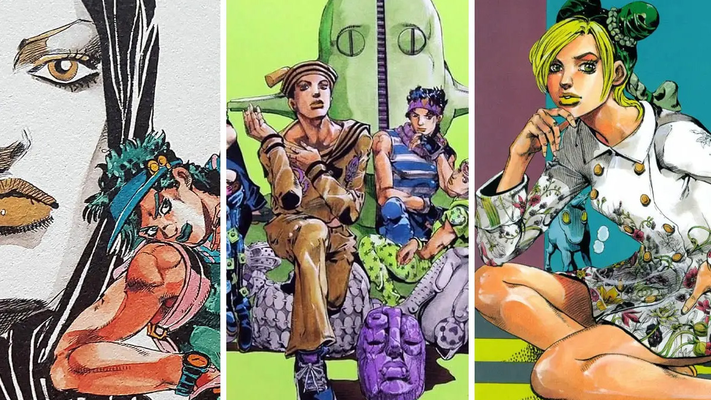
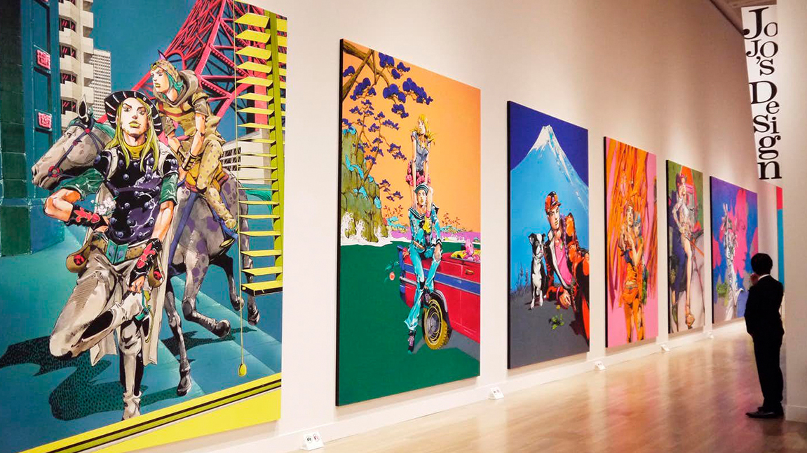
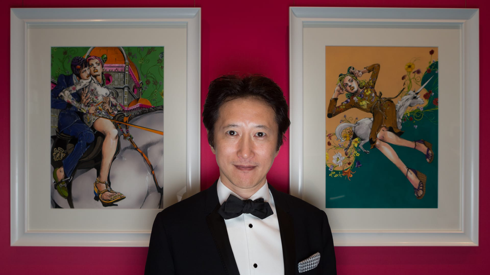
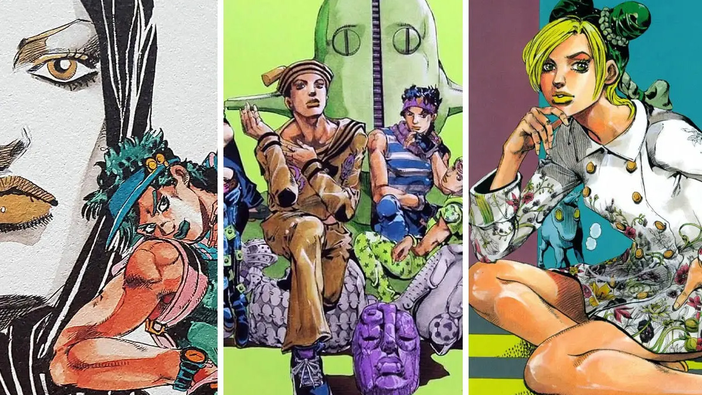
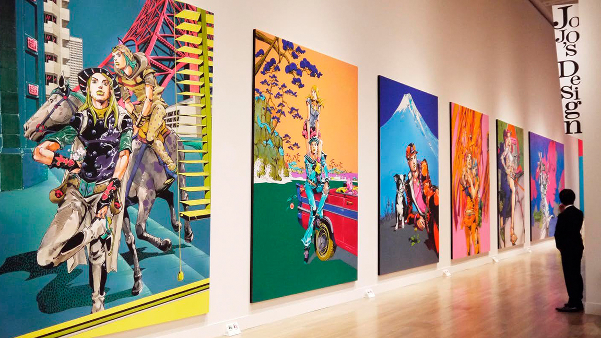
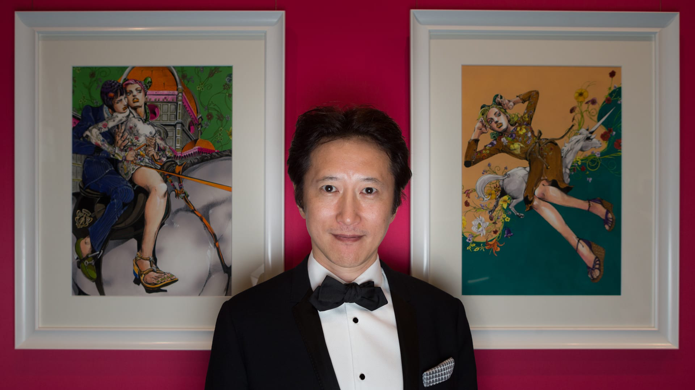

Arakijeva dela
 





Hirohiko Araki
Hirohiko Araki (rođen 7. juna 1960. u Sendaiju, Mijagi) je japanski umetnik i pisac mangi. Prvenstveno poznat po tome što je autor JoJo's Bizarre Adventure ali tokom svoje karijere se proslavio uz svoje manje poznate naslove. Araki je svoju prvu mangu nacrtao dok je bio u 4. razredu. U srednjoj školi, drug mu je pohvalio mangu i od tad je počeo da piše mange u tajnosti od svojih roditelja.
Arakijev crtež obično uključuje idealizovane figure u širokim, ekspresivnim pozama u avanturističkim razmerama i uglovima; sa oštro obojenim linijama i razbacanim, pocrnelim ravnima; dajući im skulpturalni efekat. U ilustracijama u boji i stranicama, Araki varira grubo komplementarne jukstapozicije boja.
mange
Araki je počeo da šalje radove izdavačima tokom svoje prve godine u srednjoj školi Tohoku Gakuin Tsutsujigaoka; međutim, svi njegovi podnesci su odbijeni. Araki je takođe primenio svoje radove na Tezuka nagrade, pošto je u jednom trenutku bio nominovan u 14. izdanju 1977. godine za jedan snimak pod nazivom „Boca“ koji je tada podnet pod imenom Toši Arakino. U isto vreme, drugi umetnici koji su bili oko njegovih godina nastavili su da prave velike potrese svojim debijima. Araki nije mogao da razume zašto je odbijen, pa je jednog dana 1979. odlučio da poseti uredništvo u Tokiju radi direktne povratne informacije o svom poslednjem završenom radu. U početku je nameravao da poseti Šogakukan, koji je izdavao Nedeljni Shonen Sundai, ali je bio zaplašen veličinom njihove zgrade, i odlučio je da svoj podnesak odnese u manju zgradu Shueisha (Izdavači Veekli Shonen Jump) pored. Bilo je podne kada je posetio, ali jedan početnik urednik po imenu Riosuke Kabashima se slučajno našao tamo. Kabašima je, nakon što je pročitao prvu stranicu, odmah rekao da je „procurilo ti je belo (nisi to popravio)“: kritikovan je svaki put kada je urednik prelistao svaku stranicu. Araki, iscrpljen od toga što je bio budan cele noći, osećao se kao da će se onesvestiti, ali mu je rečeno da to sredi za Tezuka nagrade. Mesecima kasnije, Araki je poslao jedan snimak pod nazivom "Poker Under Arms", koji je osvojio drugu nagradu na Tezuka nagradama.
Poker Under Arms
Poker Under Arms je japanska shonen manga koju je napisao i ilustrovao Hirohiko Araki. Pošto je bio drugoplasirano „Izabrano delo“ na Tezuka nagradama, ova manga divljeg zapada bilo je Arakijevo prvo objavljeno delo i njegov zvanični debi kao umetnik mange.
Više o mangi »Outlaw Man
Outlaw Man je japanska šonen manga koju je napisao i ilustrovao Hirohiko Araki. Uvršten je u specijalno izdanje časopisa Veekli Shonen Jump od 10. januara 1982. Bunkoban, aizoban i digitalna izdanja The Gorgeous Irene predstavljaju Outlaw Man kao poslednje poglavlje.
Više o mangi »Cool Shock B.T.
Manga je podeljena u šest poglavlja koja se sastoje od nekoliko kratkih priča koje prikazuju glavnog lika, B.T.-a, i njegove granično-kriminalne eskapade i nezgode sa njegovim često nevoljnim prijateljem Koičijem Mugikarijem. Sveska u kojoj su sastavljena sva poglavlja objavljena je 1. oktobra 1984. godine.
Više o mangi »Baoh The Visitor
Manga je licencirana na engleskom jeziku i objavljena u izdanjima mesečnih poglavlja od strane VIZ Media 1990. Pošto je bila finansijski neuspešna, tek 1995. ponovo je objavljena u tom formatu. OVA adaptacija serije Studio Pierrot objavljena 16. septembra 1989.
Više o mangi »Gorgeous Irene
Gorgeous Irene je japanska manga od dva poglavlja koju je napisao i ilustrovao Hirohiko Araki. Shueisha ga je prvi put objavila u jesenjem specijalu Veekli Shonen Jump 1. oktobra 1985. godine, a kasnije je usledilo drugo poglavlje u broju 1 Super Jump-a 29. decembra 1986.
Više o mangi »JoJo's Bizarre Adventure
Žanr JoJoa obuhvata akciju, avanturu, natprirodno, triler, komediju, tragediju, misteriju, deo života i horor. Možda je najpopularnije poznat po svom Stand fenomenu; luk Stardust Crusaders i njegovi likovi Dio Brando/DIO i Jotaro Kujo; ekspresivno izvođenje njegovih ponosnih, glamuroznih ličnosti.
Više o mangi »anime
JoJo's Bizarre Adventure
Godina je 1868, Engleski plemić Džordž Džostar i njegov sin Džonatan zadužili su se Dariju Brandu nakon što su spašeni iz incidenta sa kočijom. Ono što Džostarsi, međutim, ne shvataju je da Dario nije imao nameru da im pomogne, verovao je da su mrtvi i pokušavao je da im pretrese stvari. Nakon Darijeve smrti 12 godina kasnije, Džordž - u nadi da će otplatiti dug - usvaja svog sina Dija.
Više o animeu »JoJo's Bizarre Adventure: Stardust Crusaders
1989. Džozef Džostar stiže u Japan da upozna svog problematičnog unuka Joutaroua Kuujoua na zahtev njegove ćerke Holi. Joutarou se zaključao u zatvorsku ćeliju iz straha da ga zli duh opseda i da može naneti štetu drugima. Međutim, Džozef otkriva istinu Žutaruu: ovaj „duh“ je zaista „Stand“, fizička manifestacija nečijeg borbenog duha. Štaviše, Džozef i njegov saputnik Muhamed Avdol poseduju sopstvene standove i naučili su da ih kontrolišu sa lakoćom.
Više o animeu »JoJo's Bizarre Adventure: Diamond is Unbreakable
Godina je 1999. Morioh, inače tih i miran grad, nedavno je postao leglo čudnih aktivnosti. Joutarou Kuujou, sada morski biolog, odlazi u misteriozni grad da upozna Jousukea Higashikata. Iako se njih dvoje u početku mogu činiti strancima, Jousuke je zapravo vanbračno dete Joutarouovog dede, Džozefa Džostara. Kada se upoznaju, Joutarou shvata da možda ima više zajedničkog sa Jousukeom nego samo krvno srodstvo.
Više o animeu »JoJo's Bizarre Adventure: Golden Wind
Napulj, 2001. Giorno Giovanna je mali prevarant sa jednim velikim snom - da postane „Gang-Star“. Nije običan lopov, Đorno ima vezu sa izuzetnom krvnom lozom Džostara i poseduje stand pod nazivom Zlatno iskustvo. Njegov san počinje da postaje stvarnost kada upozna Bruna Bucciaratija, mafijaša iz bande Passione i samog kolegu korisnika Standa. Shvativši da dele slične ideale i da se obojica ne slažu sa štetnim poslovima bande, Đorno otkriva Brunu svoj cilj: uz Brunovu pomoć, on će reformisati Pasionea tako što će zbaciti šefa.
Više o animeu »JoJo's Bizarre Adventure: Stone Ocean
Na Floridi, 2011, Joline Kuujou sedi u zatvorskoj ćeliji kao što je nekada bio njen otac Joutarou; ipak ova situacija nije po njenom izboru. Podmetnuta za zločin koji nije počinila i izmanipulisana da služi dužu kaznu, Džolin je spremna da podnese ostavku na strašnu sudbinu kao zatvorenica u zatvoru u ulici Green Dolphin. Iako se čini da je svaka nada izgubljena, Joutarouov poklon na kraju budi njene latentne sposobnosti, manifestujući se u njenom Stand, Stone Free. Sada naoružana moći da promeni svoju sudbinu, Džolin kreće da pronađe bekstvo iz kamenog okeana koji je drži.
Više o animeu »